<meta name="viewport" content="width=device-width, initial-scale=1">
<title>One frame of twopointsix — a pass-by-pass frame analysis</title>
<style>
:root {
  --ground: #eef0f3; --panel: #ffffff; --panel-2: #e2e7ec; --ink: #151a21; --ink-2: #434d58; --muted: #6c7784; --rule: #d0d7de;
  --accent: #9c6512; --accent-strong: #dfac54; --on-accent: #1b1405; --focus: #2f7de1; --link: #8a560a;
  --mat: #0b0d10; --mat-ink: #d9dde2; --code: #e3e8ed;
  --node: #ffffff; --node-cpu: #e8ecf0; --band: #e2e7ec;
  --hint-r: #c4402e; --hint-g: #3f9f45; --hint-y: #a79b1e;
  --sans: ui-sans-serif, -apple-system, BlinkMacSystemFont, "Segoe UI", "Helvetica Neue", Arial, sans-serif;
  --mono: ui-monospace, "SF Mono", SFMono-Regular, Menlo, Consolas, "Liberation Mono", monospace;
  color-scheme: light;
}
@media (prefers-color-scheme: dark) {
  :root {
    --ground: #0d0f12; --panel: #151a20; --panel-2: #1e242c; --ink: #e7e4dd; --ink-2: #b0b7c0; --muted: #76808b; --rule: #29303a;
    --accent: #e0ad55; --accent-strong: #e8b45c; --on-accent: #1b1405; --focus: #6aa7ff; --link: #e8b45c;
    --mat: #050607; --mat-ink: #d9dde2; --code: #1b2027;
    --node: #171c23; --node-cpu: #111519; --band: #1b2129;
    --hint-r: #e0604c; --hint-g: #62c266; --hint-y: #cfc046;
    color-scheme: dark;
  }
}
:root[data-theme="dark"] {
  --ground: #0d0f12; --panel: #151a20; --panel-2: #1e242c; --ink: #e7e4dd; --ink-2: #b0b7c0; --muted: #76808b; --rule: #29303a;
  --accent: #e0ad55; --accent-strong: #e8b45c; --on-accent: #1b1405; --focus: #6aa7ff; --link: #e8b45c;
  --mat: #050607; --mat-ink: #d9dde2; --code: #1b2027;
  --node: #171c23; --node-cpu: #111519; --band: #1b2129;
  --hint-r: #e0604c; --hint-g: #62c266; --hint-y: #cfc046;
  color-scheme: dark;
}
:root[data-theme="light"] {
  --ground: #eef0f3; --panel: #ffffff; --panel-2: #e2e7ec; --ink: #151a21; --ink-2: #434d58; --muted: #6c7784; --rule: #d0d7de;
  --accent: #9c6512; --accent-strong: #dfac54; --on-accent: #1b1405; --focus: #2f7de1; --link: #8a560a;
  --mat: #0b0d10; --mat-ink: #d9dde2; --code: #e3e8ed;
  --node: #ffffff; --node-cpu: #e8ecf0; --band: #e2e7ec;
  --hint-r: #c4402e; --hint-g: #3f9f45; --hint-y: #a79b1e;
  color-scheme: light;
}
@media (prefers-reduced-motion: no-preference) { html { scroll-behavior: smooth; } }

html, body { background: var(--ground); }
body { margin: 0; color: var(--ink); font: 16.5px/1.62 var(--sans); -webkit-font-smoothing: antialiased; text-rendering: optimizeLegibility; overflow-x: hidden; }
.fx { max-width: 1100px; margin: 0 auto; padding: 2.6rem 1.25rem 5rem; }
.fx *, .fx *::before, .fx *::after { box-sizing: border-box; }
.fx a { color: var(--link); text-decoration-thickness: 1px; text-underline-offset: 2px; }
.fx a:focus-visible, .fx summary:focus-visible { outline: 2px solid var(--focus); outline-offset: 2px; border-radius: 2px; }
.fx p { margin: 0; }
.fx code { font-family: var(--mono); font-size: 0.88em; background: var(--code); padding: 0.06em 0.32em; border-radius: 3px; }
.fx sub, .fx sup { line-height: 0; }

/* ---- type ---- */
.eyebrow { display: block; font: 500 12px/1.3 var(--mono); letter-spacing: 0.09em; text-transform: uppercase; color: var(--accent); margin: 0 0 0.7rem; }
.eyebrow b { font-weight: 600; color: var(--ink-2); letter-spacing: 0.04em; text-transform: none; }
h1.title { font: 600 clamp(2rem, 4.4vw, 3.05rem)/1.04 var(--sans); letter-spacing: -0.025em; margin: 0 0 1rem; text-wrap: balance; }
h1.title span { color: var(--muted); font-weight: 500; }
.fx h2 { font: 600 1.62rem/1.15 var(--sans); letter-spacing: -0.015em; margin: 0 0 1.1rem; text-wrap: balance; }
.fx h3 { font: 600 1.02rem/1.3 var(--sans); margin: 1.6rem 0 0.5rem; }
.lede { font-size: 1.08rem; line-height: 1.6; color: var(--ink-2); max-width: 70ch; }
.prose { max-width: 70ch; display: flex; flex-direction: column; gap: 1rem; }
.prose p { color: var(--ink); }
.aside { font-size: 0.9rem; color: var(--ink-2); border-left: 2px solid var(--rule); padding: 0.1rem 0 0.1rem 0.9rem; max-width: 70ch; }

/* ---- masthead ---- */
.mast { display: flex; flex-direction: column; gap: 1.1rem; margin-bottom: 2.2rem; }
.meta { display: flex; flex-wrap: wrap; gap: 0.35rem 1.2rem; font: 12.5px/1.4 var(--mono); color: var(--muted); }
.toc { display: flex; flex-wrap: wrap; gap: 0.3rem 0.5rem; padding: 0; margin: 0.4rem 0 0; list-style: none; font: 12.5px/1.4 var(--mono); }
.toc li::after { content: "·"; color: var(--muted); margin-left: 0.5rem; }
.toc li:last-child::after { content: ""; }
.toc a { color: var(--ink-2); text-decoration: none; }
.toc a:hover { color: var(--link); text-decoration: underline; }
.views { font: 12px/1.5 var(--mono); color: var(--muted); background: var(--panel); border: 1px solid var(--rule); border-radius: 4px; padding: 0.55rem 0.75rem; overflow-x: auto; white-space: nowrap; }
.views b { color: var(--ink-2); font-weight: 600; }

/* ---- sections ---- */
.sec { margin-top: 3.4rem; padding-top: 2rem; border-top: 1px solid var(--rule); display: flex; flex-direction: column; gap: 1.5rem; }
.sec > .prose + figure, .sec > figure + .prose { margin-top: 0.3rem; }

/* ---- figures ---- */
figure { margin: 0; }
.shot .mat, .tri .mat, .cmp-stage { background: var(--mat); border-radius: 4px; overflow: hidden; position: relative; }
.shot img, .tri img { display: block; width: 100%; height: auto; }
figcaption { margin-top: 0.6rem; font-size: 0.9rem; line-height: 1.5; color: var(--ink-2); max-width: 82ch; }
figcaption .fn { font: 600 11.5px/1 var(--mono); letter-spacing: 0.06em; text-transform: uppercase; color: var(--accent); margin-right: 0.45rem; }
.tag { position: absolute; left: 10px; bottom: 10px; font: 500 11px/1 var(--mono); letter-spacing: 0.05em; color: #e6e9ee; background: rgba(4, 5, 7, 0.66); padding: 5px 7px; border-radius: 3px; pointer-events: none; }
.tri { display: grid; grid-template-columns: repeat(3, 1fr); gap: 10px; }
.tri > div { position: relative; }
@media (max-width: 760px) { .tri { grid-template-columns: 1fr; } }
.pair { display: grid; grid-template-columns: 1fr 1fr; gap: 14px; }
@media (max-width: 860px) { .pair { grid-template-columns: 1fr; } }

/* hero HUD overlay (the game draws a column like this down its left edge) */
.hero { position: relative; }
.hud { position: absolute; left: 14px; top: 14px; margin: 0; font: 11.5px/1.42 var(--mono); color: #dfe4ea; background: rgba(5, 6, 8, 0.64); padding: 9px 11px; border-radius: 3px; white-space: pre; pointer-events: none; }
@media (max-width: 820px) { .hud { position: static; display: block; border-radius: 0; background: #0b0d10; overflow-x: auto; } }

/* legends */
.legend { display: flex; flex-wrap: wrap; gap: 0.4rem 1.1rem; font: 12px/1.4 var(--mono); color: var(--ink-2); margin-top: 0.55rem; }
.legend span { display: inline-flex; align-items: center; gap: 0.4rem; }
.legend i { display: inline-block; width: 14px; height: 14px; border-radius: 2px; border: 1px solid rgba(127, 127, 127, 0.35); }

/* ---- pass graph ---- */
.graph { background: var(--panel); border: 1px solid var(--rule); border-radius: 4px; padding: 14px 10px 6px; overflow-x: auto; }
.graph svg { display: block; width: 100%; min-width: 1000px; height: auto; color: var(--ink); }
.graph .box { fill: var(--node); stroke: currentColor; stroke-opacity: 0.32; stroke-width: 1.2; }
.graph .cpu .box { fill: var(--node-cpu); stroke-dasharray: 4 3; }
.graph .traces .box { stroke: var(--accent-strong); stroke-opacity: 1; stroke-width: 1.7; }
.graph .t { font: 600 13px var(--sans); fill: currentColor; }
.graph .t2 { font: 600 12px var(--sans); fill: currentColor; }
.graph .s { font: 10.5px var(--mono); fill: currentColor; opacity: 0.72; }
.graph .badge rect { fill: var(--panel-2); stroke: currentColor; stroke-opacity: 0.3; }
.graph .badge text { font: 600 10.5px var(--mono); fill: currentColor; }
.graph .edge { stroke: currentColor; stroke-opacity: 0.55; stroke-width: 1.4; fill: none; }
.graph .edge.thin { stroke-opacity: 0.28; }
.graph .edge.smoke { stroke-dasharray: 5 4; stroke-opacity: 0.6; }
.graph .el { font: 10.5px var(--mono); fill: currentColor; paint-order: stroke; stroke: var(--panel); stroke-width: 5px; stroke-linejoin: round; }
.graph .band rect { fill: var(--band); }
.graph .band text { font: 11px var(--mono); fill: currentColor; opacity: 0.85; }
.graph .lane { font: 600 10.5px var(--mono); letter-spacing: 0.1em; fill: currentColor; opacity: 0.5; }
.graph marker path { fill: currentColor; fill-opacity: 0.7; }
pre.mermaid { background: var(--panel); border: 1px solid var(--rule); border-radius: 4px; padding: 12px; overflow-x: auto; font: 12px/1.45 var(--mono); color: var(--ink-2); margin: 0; }
figure.alt svg { max-width: 100%; height: auto; }

/* ---- before/after slider ---- */
.cmp-stage { aspect-ratio: 16 / 10; cursor: ew-resize; touch-action: pan-y; user-select: none; -webkit-user-select: none; --pos: 50%; }
.cmp-stage img { position: absolute; inset: 0; width: 100%; height: 100%; object-fit: cover; display: block; pointer-events: none; }
.cmp-over { clip-path: inset(0 calc(100% - var(--pos)) 0 0); }
.cmp-range { position: absolute; inset: 0; width: 100%; height: 100%; margin: 0; opacity: 0; pointer-events: none; }
.cmp-line { position: absolute; top: 0; bottom: 0; left: var(--pos); width: 2px; margin-left: -1px; background: var(--accent-strong); box-shadow: 0 0 0 1px rgba(0, 0, 0, 0.4); pointer-events: none; }
.cmp-knob { position: absolute; top: 50%; left: 50%; width: 36px; height: 36px; margin: -18px 0 0 -18px; border-radius: 50%; background: rgba(8, 9, 11, 0.78); border: 2px solid var(--accent-strong); }
.cmp-knob::before, .cmp-knob::after { content: ""; position: absolute; top: 50%; width: 0; height: 0; margin-top: -5px; border: 5px solid transparent; }
.cmp-knob::before { left: 5px; border-right-color: var(--accent-strong); border-left-width: 0; }
.cmp-knob::after { right: 5px; border-left-color: var(--accent-strong); border-right-width: 0; }
.cmp-range:focus-visible ~ .cmp-line .cmp-knob { box-shadow: 0 0 0 3px var(--focus); }
.cmp-tag { position: absolute; top: 10px; font: 600 11px/1 var(--mono); letter-spacing: 0.07em; text-transform: uppercase; color: #eceff3; background: rgba(4, 5, 7, 0.7); padding: 5px 8px; border-radius: 3px; pointer-events: none; }
.cmp-tag.l { left: 10px; }
.cmp-tag.r { right: 10px; }
.cmp-hintline { font: 11.5px/1.3 var(--mono); color: var(--muted); margin-top: 0.45rem; }

/* ---- table ---- */
.tablewrap { overflow-x: auto; border: 1px solid var(--rule); border-radius: 4px; background: var(--panel); }
table.timing { border-collapse: collapse; width: 100%; font-size: 14.5px; line-height: 1.4; min-width: 640px; }
.timing th, .timing td { padding: 0.55rem 0.8rem; border-bottom: 1px solid var(--rule); text-align: left; vertical-align: top; }
.timing thead th { font: 600 11.5px/1.2 var(--mono); letter-spacing: 0.07em; text-transform: uppercase; color: var(--muted); background: var(--panel-2); }
.timing tbody tr:last-child td { border-bottom: 0; }
.timing td.ms, .timing th.ms { text-align: right; font-family: var(--mono); font-variant-numeric: tabular-nums; white-space: nowrap; }
.timing td.res { font-family: var(--mono); font-size: 13px; color: var(--ink-2); white-space: nowrap; }
.timing tr.total td { font-weight: 600; background: var(--panel-2); }
.timing td small { display: block; color: var(--muted); font-size: 12.5px; margin-top: 2px; }

.foot { margin-top: 3.4rem; padding-top: 1.4rem; border-top: 1px solid var(--rule); font: 12.5px/1.55 var(--mono); color: var(--muted); display: flex; flex-direction: column; gap: 0.5rem; }
.foot code { font-size: 1em; }
</style>

<main class="fx">

<header class="mast">
  <span class="eyebrow">Frame analysis <b>· twopointsix · raw WebGPU / WGSL · one deterministic frame</b></span>
  <h1 class="title">One frame of twopointsix, <span>pass by pass</span></h1>
  <p class="lede">This is one frame of the cubicle farm at night: the player pressed to a partition with his rail light on, a guard sweeping a torch across the far aisle, a smoke canister venting between them. The renderer that made it rasterises the scene exactly once, into a G-buffer. Everything after primary visibility is computed by tracing rays through the same structure the gameplay code walks — about a thousand boxes registered in a 1&nbsp;m grid, fourteen capsules per character, up to 64 analytic lights with real sizes, and the smoke solver's density field. Shadows are shadow rays to points on the emitter, so penumbrae come out the width they should; bounce light is a per-pixel gather over a radiance-cascade cache that is itself re-traced every frame; beams and smoke are marched through the same lights. Nothing is baked, so a shot-out panel, an opening door or a dropped torch changes the light everywhere it physically would — and because the guards' eyes are two more GPU queries against the same data, it changes what they can see, too.</p>
  <div class="meta"><span>1920×1200 capture</span><span>~1000 boxes · 34 lights lit</span><span>≈ 18 ms at 1777×1000 “high” on an M4&nbsp;Max</span><span>no textures, no UVs, no shadow maps, no lightmaps</span></div>
  <ol class="toc" aria-label="Sections">
    <li><a href="#glance">1 the frame at a glance</a></li>
    <li><a href="#gbuffer">2 G-buffer</a></li>
    <li><a href="#direct">3 direct light</a></li>
    <li><a href="#indirect">4 indirect light</a></li>
    <li><a href="#composite">5 composite</a></li>
    <li><a href="#air">6 beams and smoke</a></li>
    <li><a href="#post">7 post</a></li>
    <li><a href="#cost">8 what it costs</a></li>
    <li><a href="#ai">9 same photons for the AI</a></li>
  </ol>
</header>

<figure class="shot hero">
  <div class="mat">
    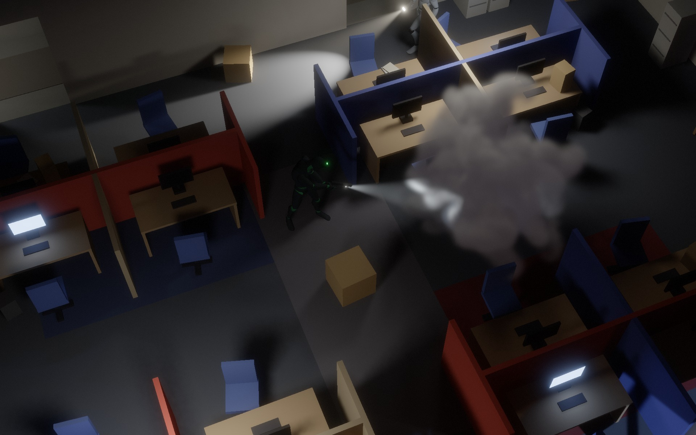
<pre class="hud" aria-hidden="true">view        final (0)
res         1920×1200
gpu ms      ≈18   M4 Max · “high” · 1777×1000
  smoke     ≈0.4 / live domain
  rc c3…c0  ≈2    + dice bake
  direct    ≈8
  softblur  ≈3
  gather    ≈3    (⅓ res)
  volumetr. &lt;1
boxes       ~1000
lights      34
rc rays     0.30M / frame
baked       nothing</pre>
  </div>
  <figcaption><span class="fn">Fig. 1</span>Debug view 0, the finished frame. The overlay mimics the stats column the game draws down its left edge; the numbers are the reference timings quoted through the rest of this page (compute passes only — on Metal, render-pass timestamps include the wait for the drawable and are not worth quoting).</figcaption>
</figure>

<p class="views" style="margin-top:1.2rem"><b>Debug views</b> as numbered in <code>composite.wgsl</code>: 0 final · 1 albedo · 2 normals · 3 direct · 4 indirect · 5 volumetrics · 6 depth · 7 dice · 8 lighting · 9 denoise hints — every picture below is one of these, from the same frame.</p>

<!-- ============================================================ 1 -->
<section class="sec" id="glance">
  <div>
    <span class="eyebrow">1 <b>· engine.ts → passes.ts · one command buffer, one submit</b></span>
    <h2>The frame at a glance</h2>
  </div>
  <div class="prose">
    <p>A frame starts on the CPU. The game step poses every skeleton — the glTF mannequins are skinned on the GPU for the raster, but rays never see triangles: each character is also fourteen analytic capsules (torso, limbs, head) plus a few boxes bolted to bones for the goggles, pistol and torch, all tagged with that character's id. Then <code>BoxWorld.upload()</code> concatenates the static and dynamic boxes, packs each into 32 bytes of geometry (centre, half-extents, an f16 cos/sin of its yaw, flags with an owner byte) and rebuilds the trace grid from scratch: 40&nbsp;×&nbsp;28 cells of 1&nbsp;m over the level's footprint, per cell the list of boxes overlapping it, a 24-bit mask of which 15&nbsp;cm height slices they occupy, and the Chebyshev distance to the nearest non-empty cell. Boxes covering more than 96 cells — floor slabs, the ceiling — become up to sixteen “globals” tested once per ray instead of being stored in hundreds of cells. Doing this every frame in JavaScript is cheap at a thousand boxes, and it is what lets doors, shoved furniture and ragdolls shadow and bounce light with no special path. The light list (64&nbsp;B per light), a 416-byte frame uniform block and the smoke emitters follow.</p>
    <p>One command encoder then records the whole GPU frame: the smoke solver's step for each live domain, the G-buffer, the radiance cascades (c3, c2, c1, then c0 and the “dice” bake), direct light and its denoise chain, the final gather and its temporal/à-trous chain, volumetrics, composite, bloom, tonemap, FXAA; the light-meter queries ride at the end and come back by async readback. Every compute pass binds the same group&nbsp;0 — boxes, grid, globals, capsules, lights, smoke atlas — so “trace a ray” means one thing everywhere: a 2D DDA over the grid that runs past provably empty cells without touching memory, drops cells and boxes whose height band the rest of the ray cannot reach, slab-tests the survivors (unrotated boxes skip the rotation), then tests the capsules with a bounding sphere per character. All of those shortcuts are exact; more on that in <a href="#cost">§8</a>.</p>
  </div>

  <figure>
    <div class="graph">
      <svg viewBox="0 0 1120 500" role="img" aria-label="Data flow of one frame: CPU stages feed a single GPU command buffer; smoke, G-buffer and cascades feed direct light, its ratio denoiser, the final gather and volumetrics, which meet in the composite and go through bloom, AgX or night vision and FXAA to the screen; light-meter queries read the same cache and smoke and are read back to the guards.">
        <defs>
          <marker id="ah" viewBox="0 0 10 10" refX="9" refY="5" markerWidth="7" markerHeight="7" orient="auto-start-reverse"><path d="M0,0 L10,5 L0,10 z"/></marker>
        </defs>
        <text class="lane" x="8" y="18">CPU · EVERY FRAME</text>
        <text class="lane" x="210" y="18">GPU · IN SUBMISSION ORDER, LEFT TO RIGHT</text>

        <!-- CPU column -->
        <g class="node cpu" transform="translate(8,30)"><rect class="box" width="166" height="50" rx="3"/><text class="t" x="10" y="20">game step · pose</text><text class="s" x="10" y="38">skin mats · capsules</text></g>
        <g class="node cpu" transform="translate(8,110)"><rect class="box" width="166" height="50" rx="3"/><text class="t" x="10" y="20">boxes → 1 m grid</text><text class="s" x="10" y="38">40×28 cells · y-masks</text></g>
        <g class="node cpu" transform="translate(8,190)"><rect class="box" width="166" height="50" rx="3"/><text class="t" x="10" y="20">lights · uniforms</text><text class="s" x="10" y="38">34 lit · 64 B / light</text></g>
        <g class="node cpu" transform="translate(8,270)"><rect class="box" width="166" height="50" rx="3"/><text class="t" x="10" y="20">encode · submit</text><text class="s" x="10" y="38">one command buffer</text></g>
        <g class="node cpu" transform="translate(8,395)"><rect class="box" width="166" height="50" rx="3"/><text class="t" x="10" y="20">guards' senses</text><text class="s" x="10" y="38">meter · sight · hearing</text></g>
        <line class="edge" x1="91" y1="80" x2="91" y2="108" marker-end="url(#ah)"/>
        <line class="edge" x1="91" y1="160" x2="91" y2="188" marker-end="url(#ah)"/>
        <line class="edge" x1="91" y1="240" x2="91" y2="268" marker-end="url(#ah)"/>
        <!-- CPU → GPU trunk -->
        <line class="edge" x1="174" y1="295" x2="194" y2="295"/>
        <line class="edge" x1="194" y1="55" x2="194" y2="325"/>
        <line class="edge" x1="194" y1="55" x2="208" y2="55" marker-end="url(#ah)"/>
        <line class="edge" x1="194" y1="190" x2="208" y2="190" marker-end="url(#ah)"/>
        <line class="edge" x1="194" y1="325" x2="208" y2="325" marker-end="url(#ah)"/>
        <text class="el" x="176" y="288">upload</text>

        <!-- column 1 -->
        <g class="node" transform="translate(210,30)"><rect class="box" width="150" height="50" rx="3"/><text class="t" x="10" y="20">smoke step</text><text class="s" x="10" y="38">64³ / domain · RB-SOR</text></g>
        <g class="badge" transform="translate(298,21)"><rect width="62" height="17" rx="8.5"/><text x="31" y="12" text-anchor="middle">0.4/dom</text></g>
        <g class="node" transform="translate(210,165)"><rect class="box" width="150" height="50" rx="3"/><text class="t" x="10" y="20">G-buffer raster</text><text class="s" x="10" y="38">albedo · N · id · depth</text></g>
        <g class="node traces" transform="translate(210,300)"><rect class="box" width="150" height="50" rx="3"/><text class="t" x="10" y="20">cascades c3 → c0</text><text class="s" x="10" y="38">297k intervals → dice</text></g>
        <g class="badge" transform="translate(310,291)"><rect width="50" height="17" rx="8.5"/><text x="25" y="12" text-anchor="middle">≈2 ms</text></g>

        <!-- column 2 -->
        <g class="node traces" transform="translate(440,30)"><rect class="box" width="150" height="50" rx="3"/><text class="t" x="10" y="20">volumetrics ½</text><text class="s" x="10" y="38">equi-angular · smoke</text></g>
        <g class="badge" transform="translate(540,21)"><rect width="50" height="17" rx="8.5"/><text x="25" y="12" text-anchor="middle">&lt;1 ms</text></g>
        <g class="node traces" transform="translate(440,165)"><rect class="box" width="150" height="50" rx="3"/><text class="t" x="10" y="20">direct light</text><text class="s" x="10" y="38">score → leader rays</text></g>
        <g class="badge" transform="translate(540,156)"><rect width="50" height="17" rx="8.5"/><text x="25" y="12" text-anchor="middle">≈8 ms</text></g>
        <g class="node traces" transform="translate(440,395)"><rect class="box" width="150" height="50" rx="3"/><text class="t" x="10" y="20">meter · sight queries</text><text class="s" x="10" y="38">≤32 queries / frame</text></g>

        <!-- column 3 -->
        <g class="node" transform="translate(670,165)"><rect class="box" width="150" height="50" rx="3"/><text class="t" x="10" y="20">ratio denoise</text><text class="s" x="10" y="38">temporal · à-trous ×4</text></g>
        <g class="badge" transform="translate(770,156)"><rect width="50" height="17" rx="8.5"/><text x="25" y="12" text-anchor="middle">≈3 ms</text></g>
        <g class="node traces" transform="translate(670,300)"><rect class="box" width="150" height="50" rx="3"/><text class="t" x="10" y="20">final gather ⅓ – ½</text><text class="s" x="10" y="38">4 rays/px → filtered</text></g>
        <g class="badge" transform="translate(770,291)"><rect width="50" height="17" rx="8.5"/><text x="25" y="12" text-anchor="middle">≈3 ms</text></g>

        <!-- column 4 -->
        <g class="node" transform="translate(895,165)"><rect class="box" width="125" height="50" rx="3"/><text class="t" x="10" y="20">composite</text><text class="s" x="10" y="38">× albedo, + fog</text></g>

        <!-- column 5: post chain -->
        <g class="node" transform="translate(1040,120)"><rect class="box" width="72" height="36" rx="3"/><text class="t2" x="36" y="22" text-anchor="middle">bloom</text></g>
        <g class="node" transform="translate(1040,172)"><rect class="box" width="72" height="36" rx="3"/><text class="t2" x="36" y="22" text-anchor="middle">AgX | NV</text></g>
        <g class="node" transform="translate(1040,224)"><rect class="box" width="72" height="36" rx="3"/><text class="t2" x="36" y="22" text-anchor="middle">FXAA·grain</text></g>
        <g class="node" transform="translate(1040,276)"><rect class="box" width="72" height="30" rx="15"/><text class="t2" x="36" y="19" text-anchor="middle">screen</text></g>

        <!-- edges: G-buffer out -->
        <line class="edge" x1="360" y1="190" x2="438" y2="190" marker-end="url(#ah)"/>
        <text class="el" x="366" y="183">depth·N·id</text>
        <line class="edge thin" x1="360" y1="172" x2="438" y2="72" marker-end="url(#ah)"/>
        <line class="edge thin" x1="360" y1="207" x2="668" y2="318" marker-end="url(#ah)"/>
        <!-- direct → denoise → composite -->
        <line class="edge" x1="590" y1="190" x2="668" y2="190" marker-end="url(#ah)"/>
        <text class="el" x="596" y="183">S·U·hint ×2</text>
        <line class="edge" x1="820" y1="190" x2="893" y2="190" marker-end="url(#ah)"/>
        <text class="el" x="826" y="183">direct ×2</text>
        <!-- denoise → gather (on-screen reuse) -->
        <line class="edge" x1="745" y1="215" x2="745" y2="298" marker-end="url(#ah)"/>
        <text class="el" x="751" y="262">on-screen direct</text>
        <!-- cascades → gather, → probe -->
        <line class="edge" x1="360" y1="325" x2="668" y2="325" marker-end="url(#ah)"/>
        <text class="el" x="452" y="319">dice · irradiance cache</text>
        <line class="edge" x1="360" y1="342" x2="438" y2="408" marker-end="url(#ah)"/>
        <text class="el" x="366" y="392">dice</text>
        <!-- gather → composite -->
        <line class="edge" x1="820" y1="325" x2="955" y2="217" marker-end="url(#ah)"/>
        <text class="el" x="858" y="300">indirect ↑</text>
        <!-- volumetrics → composite -->
        <polyline class="edge" points="590,55 957,55 957,163" marker-end="url(#ah)"/>
        <text class="el" x="640" y="49">in-scatter · T  (½ res ↑)</text>
        <!-- smoke trunk (dashed): to volumetrics, direct, probe -->
        <line class="edge smoke" x1="360" y1="45" x2="438" y2="45" marker-end="url(#ah)"/>
        <text class="el" x="366" y="39">density</text>
        <polyline class="edge smoke" points="360,64 400,64 400,420 438,420" marker-end="url(#ah)"/>
        <line class="edge smoke" x1="400" y1="205" x2="438" y2="205" marker-end="url(#ah)"/>
        <text class="el" x="396" y="416" text-anchor="end">density</text>
        <!-- composite → post chain -->
        <line class="edge" x1="1020" y1="182" x2="1038" y2="145" marker-end="url(#ah)"/>
        <line class="edge" x1="1076" y1="156" x2="1076" y2="170" marker-end="url(#ah)"/>
        <line class="edge" x1="1076" y1="208" x2="1076" y2="222" marker-end="url(#ah)"/>
        <line class="edge" x1="1076" y1="260" x2="1076" y2="274" marker-end="url(#ah)"/>
        <!-- probe → guards (readback) -->
        <line class="edge" x1="440" y1="432" x2="176" y2="432" marker-end="url(#ah)"/>
        <text class="el" x="230" y="448">readback · 1–2 frames later</text>

        <!-- scene band -->
        <g class="band"><rect x="210" y="462" width="810" height="30" rx="3"/><text x="615" y="481" text-anchor="middle">group 0, bound to every pass — 1 m box grid + 16 globals · capsules · ≤ 64 lights · smoke atlas + occupancy bits · frame uniforms</text></g>
      </svg>
    </div>
    <figcaption><span class="fn">Fig. 2</span>Data flow of the frame. Boxes are passes, roughly in submission order left to right; badges are approximate GPU cost (M4 Max, 1777×1000 internal, “high” preset); edge labels name what moves between them. Amber outlines mark the passes that trace rays against group&nbsp;0 along the bottom; dashed edges are reads of the smoke density field. Not drawn to keep it legible: the G-buffer's albedo goes straight to the composite, and the cache's mean radiance is the ambient term inside lit smoke.</figcaption>
  </figure>

  <figure class="alt">
<pre class="mermaid">
flowchart LR
  subgraph cpu ["CPU, every frame"]
    pose["pose skeletons + capsules"] --> grid["boxes into 1 m grid + height masks"] --> up["upload boxes, lights, smoke, uniforms"]
  end
  subgraph gpu ["GPU, one command buffer"]
    smk["smoke step 64^3, RB-SOR pressure"]
    gb["G-buffer raster"]
    rc["cascades c3..c0 to dice"]
    dir["direct: score, leader shadow rays"]
    den["ratio denoise: tiles, temporal, a-trous"]
    fg["final gather, half or third res"]
    tmp["gather temporal + a-trous"]
    vol["volumetrics, half res"]
    comp["composite HDR"]
    blm["bloom"]
    pp["AgX or night vision"]
    fx["FXAA + grain"]
    prb["light meter + sight queries"]
  end
  up --> smk
  up --> gb
  up --> rc
  gb -- "depth, normal, id" --> dir
  dir -- "S, U, hints x2" --> den
  gb -- "depth, normal, id" --> fg
  den -- "on-screen direct" --> fg
  rc -- "dice irradiance" --> fg
  fg -- "E indirect" --> tmp
  gb -- "depth" --> vol
  rc -- "mean radiance" --> vol
  smk -. "density" .-> vol
  smk -. "transmittance" .-> dir
  gb -- "albedo" --> comp
  den -- "direct x2" --> comp
  tmp -- "indirect, upsampled" --> comp
  vol -- "in-scatter, T" --> comp
  comp --> blm --> pp --> fx --> scr(["screen"])
  rc -- "dice" --> prb
  smk -. "density" .-> prb
  prb -. "readback" .-> ai["guards' senses on the CPU"]
</pre>
    <figcaption><span class="fn">Fig. 2b</span>The same dependency graph as a Mermaid flowchart, with the gather's temporal/à-trous stage split out and the G-buffer's albedo edge included. Solid edges are texture hand-offs, dotted ones sample the smoke field or cross back to the CPU.</figcaption>
  </figure>
</section>

<!-- ============================================================ 2 -->
<section class="sec" id="gbuffer">
  <div>
    <span class="eyebrow">2 <b>· gbuffer.ts / gbuffer.wgsl · full res · the only raster pass</b></span>
    <h2>G-buffer: four flat targets and one useful byte</h2>
  </div>
  <div class="prose">
    <p>Boxes need no vertex buffer: one instanced draw of 36 vertices per visible box, <code>draw(36, visibleCount)</code>, with the cube corner derived from <code>vertex_index</code> and the box's centre, half-extents and rotation fetched from the same storage buffers the rays read. Characters are a second, indexed draw, skinned in the vertex shader from four weights and a storage buffer of joint matrices. There are no material textures and no UVs anywhere in the project — albedo is one flat colour per box, two tints per character — which is why the albedo target can be plain <code>rgba8unorm</code>. Normals go to <code>rgb10a2unorm</code> as <code>n·0.5+0.5</code> in world space, depth is <code>depth32float</code>, and the fourth target is an <code>r32uint</code> id cleared to <code>0xFFFFFFFF</code> for sky.</p>
    <p>That id word is the interesting one: bits 0–19 index the box (<code>0xFFFFF</code> on skinned pixels), bits 20–27 carry an <em>owner</em> byte — the id of the character this surface belongs to, zero for the level — bit 28 marks skinned geometry and bit 29 a “section cap”, a wall top flush under the hidden ceiling that the composite paints in the dark cap tint (the ceiling boxes themselves are <code>NoPrimary</code>: invisible to the camera, solid to every ray). The owner byte exists for the rays that start at these pixels. A character's shadow proxy is a set of capsules a few centimetres fatter than the mesh, so a shadow ray leaving Sam's shoulder would immediately hit Sam's own chest capsule; and the rail light under his pistol sits inside the capsules of the hands holding it. Every visibility query therefore takes a skip word — the receiving pixel's owner in the low byte, the light's owner in the next — and ignores boxes and capsules carrying either id. Nobody shadows themselves with their own proxy, a torch is never blocked by the guard carrying it, and everyone still shadows everyone else.</p>
  </div>
  <figure>
    <div class="tri">
      <div><div class="mat">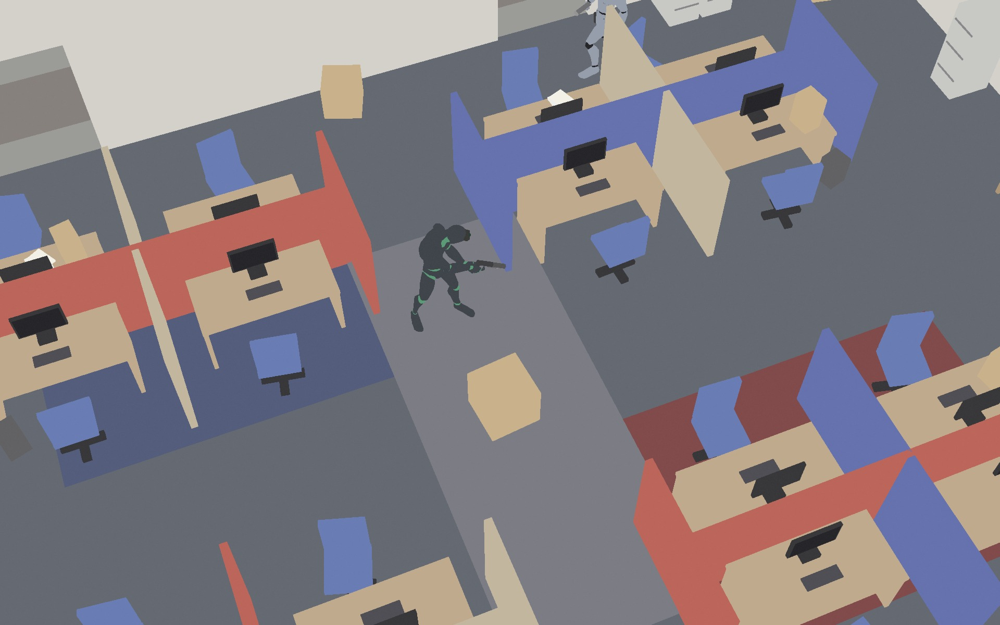<span class="tag">1 · albedo · rgba8unorm</span></div></div>
      <div><div class="mat">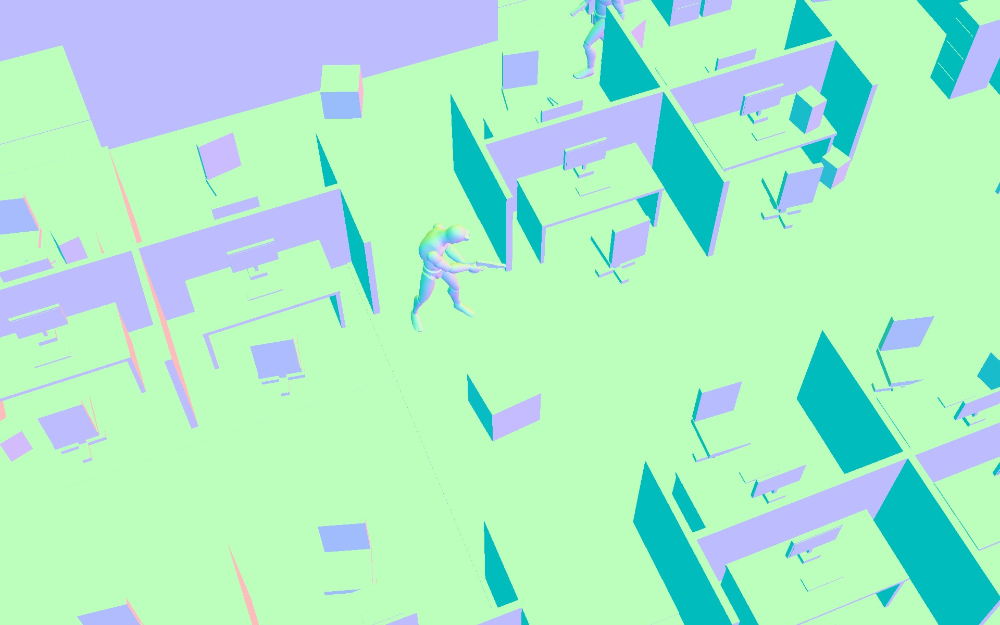<span class="tag">2 · world normal · rgb10a2</span></div></div>
      <div><div class="mat">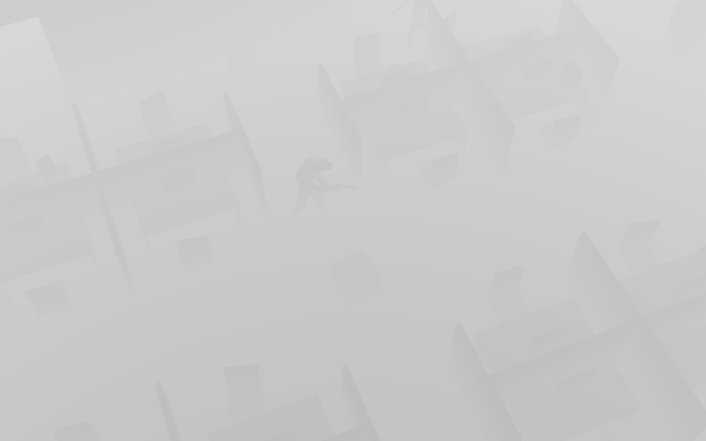<span class="tag">6 · distance · from depth32float</span></div></div>
    </div>
    <div class="legend" aria-label="Normal colours">
      <span><i style="background:#bcffbc"></i>+Y up (floor, desk tops)</span>
      <span><i style="background:#00bcbc"></i>−X</span>
      <span><i style="background:#ffbcbc"></i>+X</span>
      <span><i style="background:#bcbcff"></i>+Z</span>
      <span><i style="background:#bcbc00"></i>−Z</span>
      <span><i style="background:#bc00bc"></i>−Y (undersides)</span>
      <span>= n·0.5+0.5, shown sRGB-encoded</span>
    </div>
    <figcaption><span class="fn">Fig. 3</span>Debug views 1, 2 and 6. The depth picture is not the raw Z buffer but <code>1 − exp(−0.06·distance)</code>, white = far; the lighting passes recover world positions from the real depth through <code>invViewProj</code>. The camera is a narrow 28° perspective tilted down at about 55° — the “2.5” in 2.5D: a plan-view game over genuinely three-dimensional geometry and light.</figcaption>
  </figure>
</section>

<!-- ============================================================ 3 -->
<section class="sec" id="direct">
  <div>
    <span class="eyebrow">3 <b>· direct.wgsl → softtile · dtemporal · softblur · full res · ≈ 8 + 3 ms</b></span>
    <h2>Direct light: score everything, trace what matters, denoise only visibility</h2>
  </div>
  <div class="prose">
    <p>One compute pass in 8×8 tiles does all direct lighting, for every light, with one estimator. Each tile stages the light list in workgroup memory and culls it against the bounding box of its 64 shading points — conservatively, so the survivors are exactly the lights that could evaluate non-zero somewhere in the tile; of the ~34 lit in the level a desk-sized tile keeps a handful. Then every pixel scores every survivor <em>unshadowed</em>, analytically: windowed inverse-square with the emitter's radius as the near-field floor, the spot cone, the emitter-side cosine of a one-sided area light. Emissive fixtures take part as real lights: at load, every thin glowing box (ceiling panel, monitor, exit sign) becomes a Lambertian disk emitter of the same area and radiance, and its box is flagged so rays ignore the emission. The panel still glows on screen, but it lights the room through the analytic light — smooth falloff, soft shadows — instead of waiting for gather rays to find a small bright rectangle by luck.</p>
    <p>Lights fall into two classes with different shadow character, <em>sharp</em> (torches, the rail light, bare bulbs, muzzle flashes, the moon) and <em>broad</em> (panels, screens, street lamps), and each class keeps its own top three by unshadowed luminance while scoring. Shadow rays go where they pay. The strongest light of a class gets up to 8 rays to stratified points on its emitter disk (golden-ratio steps in radius², a second irrational step in angle, so every prefix of the sequence is well spread), the next leaders 4 — two leaders in the sharp class, three in the broad one, whose budgets are further capped at 4 and 2 — and sampling stops as soon as three samples agree, so the full budget is only ever spent inside a penumbra. Everything below the leaders is the tail: its unshadowed sum is known exactly, one member is drawn with probability proportional to its score by a weighted reservoir over scores already in registers, and that light's single shadow ray stands in for the tail's visibility. Cost is bounded by the leader budget plus one ray per class, not by how many lights are on. Because samples land on the emitter's actual disk — 7&nbsp;cm for a torch, √(area/π) for a panel — penumbra width comes out physically: contact-hard at the foot of a partition, a metre wide under a ceiling panel. The any-hit query also reports roughly where it was blocked, which yields a PCSS-style estimate of the penumbra at the receiver, radius&nbsp;·&nbsp;d<sub>blocker</sub>/(d<sub>light</sub>&nbsp;−&nbsp;d<sub>blocker</sub>), converted to pixels at this depth. Clear rays are additionally attenuated by an eight-step march through the smoke field, which is why the plume throws the soft dark blots on the floor in Fig.&nbsp;4.</p>
    <p>Per class the pass writes two full-resolution <code>rgba16f</code> textures: <b>U</b>, the exact unshadowed irradiance, and <b>S</b>, the shadowed estimate, with the penumbra width in S's alpha (negative: “I measured this”, zero: “lit, as far as my rays know”). The denoiser that follows never filters light, only visibility: 3×3 à-trous passes (strides 1, 2, 4 with the default three passes) smooth the ratio S/U per channel — weights from plane distance, normal, and “lit alike”, since the ratio under one light's footprint says nothing about a neighbour under another's — by as much as each pixel's hint asks for, and write back U&nbsp;×&nbsp;ratio. Cone edges, inverse-square falloff and N·L live in U and stay per-pixel exact; a blur of a quantity clamped to [0,&nbsp;1] cannot push light through a wall or lift a black corner. It is also why moving lights leave no ghosts: when a torch sweeps or a panel is shot out, S and U change together in the same frame, so the ratio has nothing stale in it, and the short temporal blend in front of the chain (50&nbsp;% of last frame's S, reprojected, rejected on a 0.5&nbsp;% depth mismatch, clipped to the 3×3 neighbourhood's mean&nbsp;±&nbsp;1.25σ) can only ever pull toward values the current frame already considers plausible. Muzzle flashes go through the identical estimator with no special case; they are merely kept out of the accumulated signals downstream.</p>
    <p>Two exact shortcuts keep the filter cheap. Per pixel, a class with no light here, or with no hint within reach, is copied through untouched. Per tile, a tiny pre-pass flags the 8×8 tiles holding any hint and computes every tile's Chebyshev distance to the nearest flagged one; a hint can travel at most the chain's summed stride (8&nbsp;px by default), so a tile two or more tiles from every hint copies input to output at every step — provably the bits the per-pixel path would have produced, which is the standard every “lossless” switch in this renderer is held to.</p>
  </div>
  <figure class="shot">
    <div class="mat">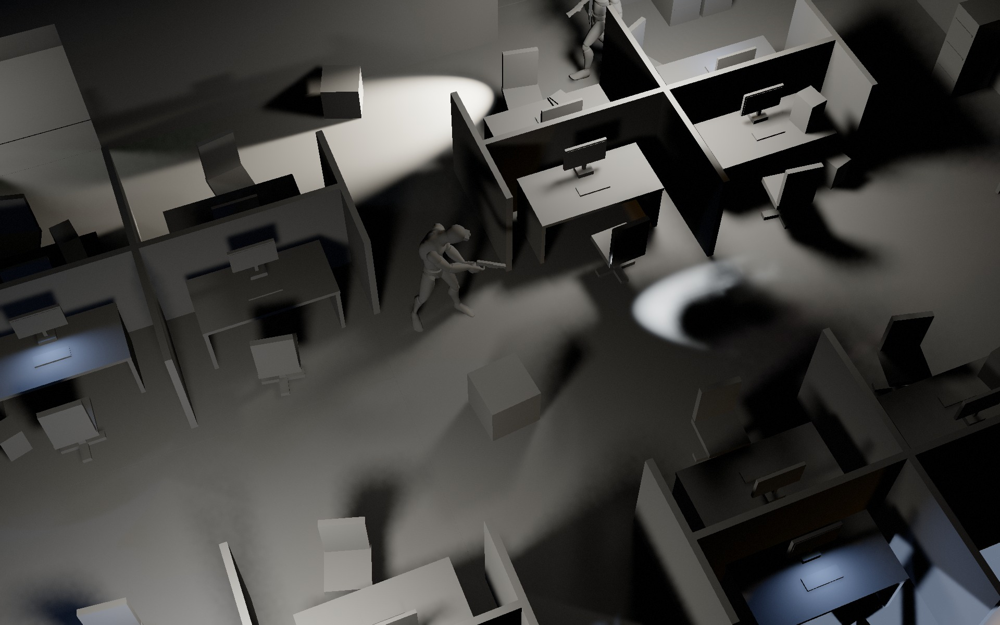<span class="tag">3 · direct · (S_sharp + S_broad)/π</span></div>
    <figcaption><span class="fn">Fig. 4</span>Debug view 3: both classes' denoised direct irradiance on white albedo, through the normal tonemap. The guard's torch pool (top) with the box's contact-hard shadow softening with distance; the rail light's hot ellipse right of centre; metre-wide panel penumbrae in every footwell; and the smoke column's shadow on the carpet to the right — shadow rays see the density field too.</figcaption>
  </figure>
  <figure class="shot">
    <div class="mat">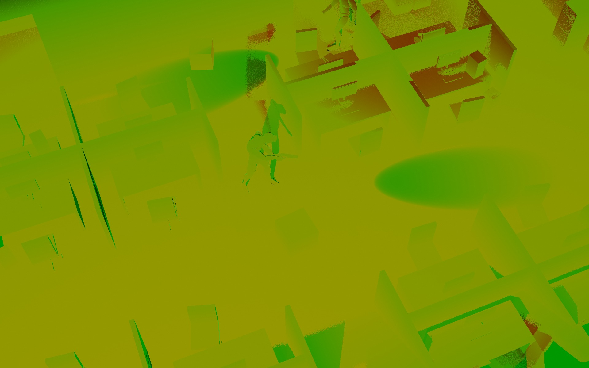<span class="tag">9 · denoise hints · |S.a| per class</span></div>
    <div class="legend" aria-label="Hint colours">
      <span><i style="background:var(--hint-r)"></i>red = sharp-class radius (torches, rail light, flashes, moon)</span>
      <span><i style="background:var(--hint-g)"></i>green = broad-class radius (panels, screens, street lamps)</span>
      <span><i style="background:var(--hint-y)"></i>olive / yellow = both</span>
      <span><i style="background:#000"></i>black = no hint in reach → pass-through</span>
      <span>brightness = requested radius, 0 … 10 px cap</span>
    </div>
    <figcaption><span class="fn">Fig. 5</span>Debug view 9: the penumbra hints as they stand after the chain has dilated them (a lit pixel inherits the widest measured width within reach, so the lit side of a penumbra is filtered like the dark side). Almost the whole interior is olive, both channels non-zero: green because in a cubicle farm nearly every pixel is within reach of some ceiling-panel penumbra, red because the moon is a member of every pixel's sharp class and indoors its shadow rays always end in the ceiling, which counts as a thin measured shadow. Brighter red marks the places a sharp emitter's penumbra was measured wide — behind the partitions the torch grazes, on the desks along the top wall. The clean green ellipse is the rail light's pool: there the rail light so dominates the sharp class that the moon is not worth a ray, and the pool itself is fully lit, so there is no sharp hint at all.</figcaption>
  </figure>
</section>

<!-- ============================================================ 4 -->
<section class="sec" id="indirect">
  <div>
    <span class="eyebrow">4 <b>· rc.ts / rc.wgsl → fgather · temporal · giblur · ≈ 2 + 3 ms</b></span>
    <h2>Indirect light: a coarse cache, read one bounce away</h2>
  </div>
  <div class="prose">
    <p>Bounce light is two cooperating pieces. The cache is a set of world-space radiance cascades over the 40&nbsp;×&nbsp;3&nbsp;×&nbsp;28&nbsp;m interior. Cascade&nbsp;0 is a 40&nbsp;×&nbsp;4&nbsp;×&nbsp;28 lattice of probes (1&nbsp;m apart in plan, 0.75&nbsp;m vertically), each tracing 16 octahedral directions over the first 0.6&nbsp;m; every level above halves the lattice in X and Z, quadruples the directions and takes the next interval out — 0.6–3&nbsp;m, 3–12.6&nbsp;m and 12.6–51&nbsp;m at 64, 256 and 1024 directions. That is about 297,000 interval rays a frame through the same <code>traceClosest</code>, each hit shaded with the steady lights' shadowed direct light plus <em>last frame's</em> cache, which is where second and later bounces come from. An interval that reaches its end unblocked continues with the parent cascade's radiance for that direction, interpolated from the four surrounding parent probes but only from those the child probe can actually see (one visibility ray per corner), so light does not merge through walls; the top level ends in the sky. Cascade&nbsp;0 is then folded into the “dice”: a 40&nbsp;×&nbsp;28&nbsp;×&nbsp;28 <code>rgba16f</code> volume holding, per probe, cosine-weighted irradiance through the six axis directions plus mean radiance, blended 30&nbsp;% a frame toward the new bake. The direction set is jittered every frame along an R2 sequence, so sixteen-direction aliasing becomes noise that this blend and the gather's history average out. All four levels are re-traced every frame by default; staggering the upper ones, or running the whole cache at half rate, exist as switches.</p>
    <p>Nothing on screen reads that volume directly. The final gather runs at half resolution (a third on the “high” preset) and traces four cosine-distributed rays per texel, up to 40&nbsp;m, through boxes and capsules, skipping the pixel's own owner. Where a ray lands it evaluates outgoing radiance properly: the hit surface's albedo over π times the direct light there — read from the denoised direct textures when the hit point happens to be on screen, otherwise every steady light scored and one importance-picked shadow ray — plus the dice irradiance sampled one probe spacing off the hit surface, plus emission; misses return sky, and a generous firefly clamp catches the one ray in four that finds a tiny hot spot. So the segment that carries all the visible structure — the occlusion in a footwell, the blue a partition bleeds onto the carpet, the warm light the torch pool throws back up the wall behind the box — is a real ray per pixel, and the cache only answers “how much light arrives over the hemisphere at that second point”, a quantity already so smooth that metre-sized probes disappear in it. Fig.&nbsp;7 is what skipping the indirection would look like. The gather writes irradiance without albedo, so its filters can blur across material edges freely: a reprojected history (86&nbsp;% when the depth test passes, clipped to the neighbourhood's mean&nbsp;±&nbsp;σ), three à-trous passes guided by full-resolution depth and normals, and a 3×3 joint-bilateral upsample in the composite. Transient lights are subtracted before anything enters that history: a muzzle flash lights the frame it happens in and never lingers as bounce.</p>
  </div>
  <div class="pair">
    <figure class="shot">
      <div class="mat">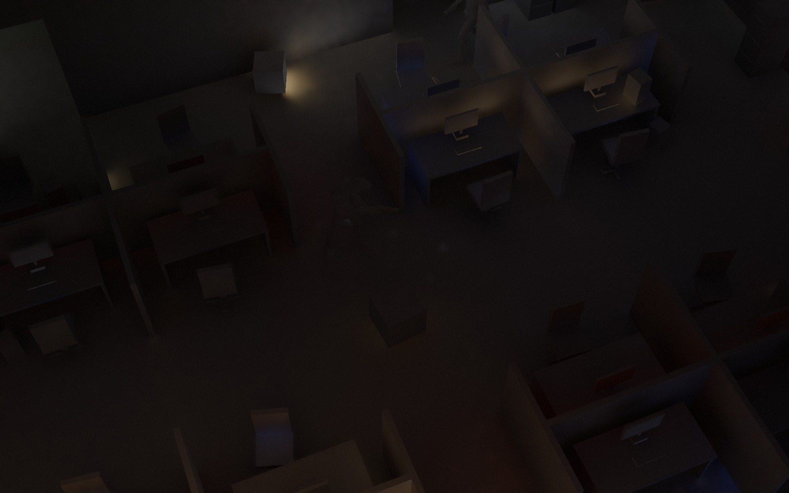<span class="tag">4 · indirect · E_i/π, ×0.35</span></div>
      <figcaption><span class="fn">Fig. 6</span>Debug view 4: the gather's irradiance over π, before albedo, at the 0.35 indirect scale the look uses. Warm bounce off the torch-lit box and carpet climbing the wall, cool fill between blue partitions, every footwell darkening toward the floor — all from the per-pixel first segment.</figcaption>
    </figure>
    <figure class="shot">
      <div class="mat">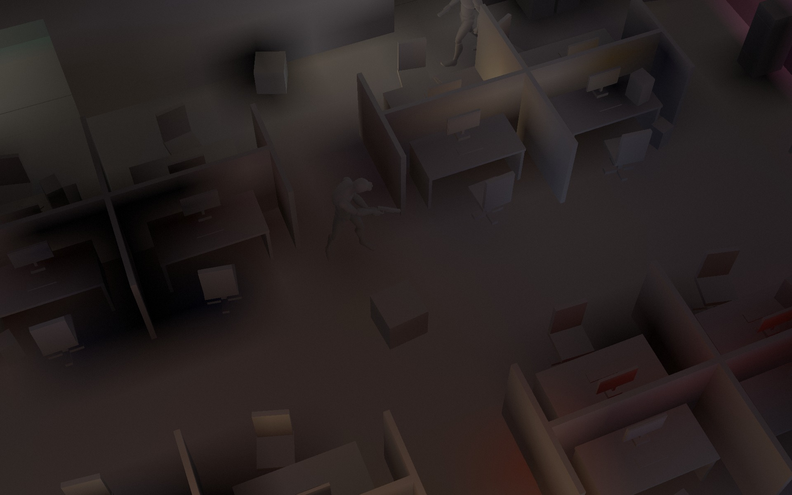<span class="tag">7 · dice · cache irradiance at the surface</span></div>
      <figcaption><span class="fn">Fig. 7</span>Debug view 7: the cache itself, sampled 27&nbsp;cm off each visible surface. Probe-sized gradients, a metre-wide dark hole under the left cubicles, tints that ignore partitions: fine as “light arriving somewhere over there”, unusable as a picture — which is why nothing draws it.</figcaption>
    </figure>
  </div>
  <figure>
    <div class="cmp-stage" data-compare>
      <input class="cmp-range" type="range" min="0" max="100" step="1" value="50" aria-label="Comparison slider: direct light only on the left, direct plus indirect on the right">
      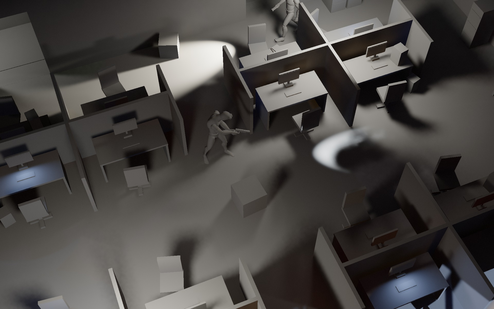
      
      <div class="cmp-line" aria-hidden="true"><span class="cmp-knob"></span></div>
      <span class="cmp-tag l" aria-hidden="true">3 · direct only</span><span class="cmp-tag r" aria-hidden="true">8 · direct + indirect</span>
    </div>
    <p class="cmp-hintline">drag, or focus and use ← → </p>
    <figcaption><span class="fn">Fig. 8</span>Debug views 3 and 8, both on white albedo. What the bounce adds is small in the lit aisle and most of what can be seen at all inside the cubicles, on the partition faces turned away from every panel, and on the wall above the torch pool.</figcaption>
  </figure>
</section>

<!-- ============================================================ 5 -->
<section class="sec" id="composite">
  <div>
    <span class="eyebrow">5 <b>· composite.wgsl · full res · HDR rgba16f</b></span>
    <h2>Composite: light meets albedo</h2>
  </div>
  <div class="prose">
    <p>The composite is one full-screen triangle writing scene-referred colour: <code>albedo × (E<sub>sharp</sub> + E<sub>broad</sub> + E<sub>indirect</sub>↑) / π + emissive</code>, where ↑ is the joint-bilateral upsample of the gather — nine low-resolution taps, each weighted by depth, normal and distance to the full-resolution pixel it was actually traced at. Every surface in the project is Lambertian; there is no specular term anywhere, which is a large part of why four rays and a coarse cache are enough. Section caps get their flat tint here, sky pixels the sky gradient, and last of all the volumetric buffer is applied as <code>colour × T + in-scatter</code> through its own depth-aware upsample. Exposure and tonemapping wait for the post pass; the target here is linear <code>rgba16f</code>.</p>
  </div>
  <figure>
    <div class="cmp-stage" data-compare>
      <input class="cmp-range" type="range" min="0" max="100" step="1" value="50" aria-label="Comparison slider: combined lighting on white on the left, the final frame on the right">
      
      
      <div class="cmp-line" aria-hidden="true"><span class="cmp-knob"></span></div>
      <span class="cmp-tag l" aria-hidden="true">8 · lighting on white</span><span class="cmp-tag r" aria-hidden="true">0 · × albedo + fog + post</span>
    </div>
    <p class="cmp-hintline">drag, or focus and use ← → </p>
    <figcaption><span class="fn">Fig. 9</span>Debug view 8 against the final frame: the same irradiance, then multiplied by albedo, plus emissive screens, plus the volumetric buffer, through bloom and AgX. Note how much of the “darkness” of the final image is dark carpet rather than absent light.</figcaption>
  </figure>
</section>

<!-- ============================================================ 6 -->
<section class="sec" id="air">
  <div>
    <span class="eyebrow">6 <b>· volumetrics.wgsl · ½ res · &lt; 1 ms — smoke.ts / smoke.wgsl · 64³ · ≈ 0.4 ms per live domain</b></span>
    <h2>Air: beams and smoke through the same lights</h2>
  </div>
  <div class="prose">
    <p>The volumetric pass runs at half resolution — each texel marches the view ray of one full-resolution pixel of its 2×2 block, a different one for neighbouring texels — and writes in-scattered radiance plus transmittance toward the surface. For every light flagged volumetric, the view ray is clipped analytically to the light's range sphere and, for spots, to the cone (a quadratic in <i>t</i>), and the surviving segment is sampled <em>equi-angularly</em>: uniformly in the angle subtended at the light rather than in distance, which puts the 4–20 samples where 1/d² puts the energy, next to the source. Each sample evaluates the light, fires a shadow ray through the boxes — beams break around furniture and squeeze through door gaps correctly — is attenuated by the smoke between it and the light, and is weighted by a Henyey–Greenstein phase (g&nbsp;=&nbsp;0.45) and a drifting value-noise dust density. The haze itself is thin and uniform (σ<sub>s</sub>&nbsp;=&nbsp;0.035&nbsp;m⁻¹), so its own extinction is ignored. None of this is temporally filtered: a beam is complete the frame the torch turns.</p>
    <p>Smoke is a real Eulerian solver: a pool of up to eight 64³ domains — 2.2&nbsp;cm cells in a 1.4&nbsp;m cube for gun smoke, 5.5&nbsp;cm cells in a ceiling-high 3.5&nbsp;m cube for a canister — dropped wherever something starts emitting, with obstacles baked from the same box grid. A step is semi-Lagrangian advection of velocity, buoyancy and vorticity confinement, a pressure projection solved by red–black Gauss–Seidel with over-relaxation (ω&nbsp;=&nbsp;1.7, four red/black pairs, about what twenty Jacobi sweeps used to buy), then MacCormack advection and decay of density and temperature. Two occupancy structures make emptiness free. The scalar passes return immediately in 8³-cell bricks that provably come out zero this step; and at the end of the step the solver publishes 512 bits per domain — “this brick or its one-cell shell holds density” — as a small uniform block that every renderer-side sample of the field (shadow rays, beams, the march below, the AI's sight lines) tests before touching the atlas. A skipped fetch would have returned exactly zero, so the picture is bit-identical with the skip switched off.</p>
    <p>The march through the smoke happens before the beams, since it attenuates what lies behind it: the view ray is clipped to the union of live domains and stepped at 1.5 voxels, and wherever there is density the sample is lit by the cache's mean radiance as ambient plus a per-ray shortlist of at most sixteen lights that could deliver 0.03&nbsp;W/m² anywhere on the segment, each with a shadow ray and a four-tap self-shadow march into the plume — that is the bright rim where the rail light enters the cloud in Fig.&nbsp;10 — integrated energy-conservingly per step until transmittance falls under 1&nbsp;%. The same <code>smokeDensityAt</code> is what a guard's eyes call. Once a frame per guard, a GPU query marches 24 samples from his head to the player's chest and returns a transmittance; below 0.3 the line of sight is simply blocked, above it his detection rate scales with how clear the air is. Smoke that hides you on screen hides you from him because it is the same texture fetch.</p>
  </div>
  <figure class="shot">
    <div class="mat">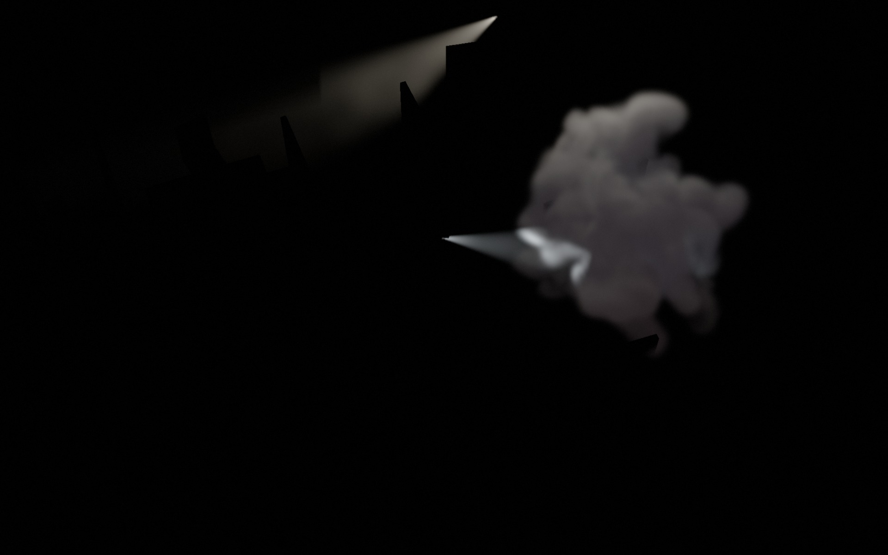<span class="tag">5 · volumetrics · in-scatter (rgb of the ½-res buffer)</span></div>
    <figcaption><span class="fn">Fig. 10</span>Debug view 5: the volumetric buffer's colour on black. The guard's torch cone, notched by the partition tops it passes over; the rail light's beam, brightest at the muzzle where its 1/d² core sits and where equi-angular sampling therefore spends its samples; and the plume, lit at its face by the rail light and everywhere else by ceiling panels from the shortlist and the cache's ambient term.</figcaption>
  </figure>
</section>

<!-- ============================================================ 7 -->
<section class="sec" id="post">
  <div>
    <span class="eyebrow">7 <b>· bloom.wgsl · post.wgsl · fxaa.wgsl · full res</b></span>
    <h2>Post: bloom without a threshold, AgX, and a different pipe for the goggles</h2>
  </div>
  <div class="prose">
    <p>From here on it is image processing. Bloom has no threshold — a small fraction of every pixel scatters, as in a real lens: a 13-tap, Karis-weighted first downsample (with a hard ceiling of 64 on its output so a muzzle-flash pixel cannot own the frame), four more 2×2 downsamples to 1/32 of the width, then four 3×3 tent upsamples each added onto the level above; the post pass mixes in 6&nbsp;% of the half-resolution result. Then exposure (×2), AgX through the usual polynomial fit of its sigmoid with a mild look on top (power 1.15, saturation 1.15), a triangular-pdf dither of ±1&nbsp;LSB into an <code>rgba8</code> target, an FXAA&nbsp;3.11-style edge search into the swap chain, and film grain last of all (amplitude 0.022, faded out of the highlights) so the anti-aliasing cannot mistake it for edges and smooth it away.</p>
  </div>
  <figure>
    <div class="cmp-stage" data-compare>
      <input class="cmp-range" type="range" min="0" max="100" step="1" value="50" aria-label="Comparison slider: bloom off on the left, bloom on on the right">
      
      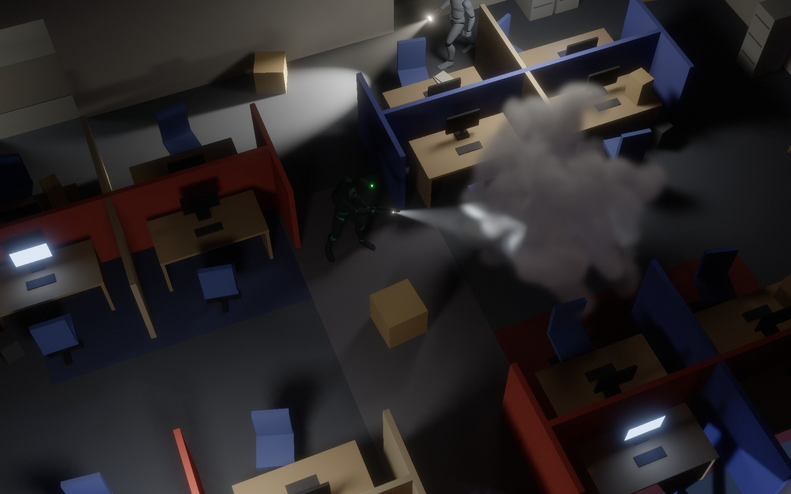
      <div class="cmp-line" aria-hidden="true"><span class="cmp-knob"></span></div>
      <span class="cmp-tag l" aria-hidden="true">bloom 0</span><span class="cmp-tag r" aria-hidden="true">bloom 0.06</span>
    </div>
    <p class="cmp-hintline">drag, or focus and use ← → </p>
    <figcaption><span class="fn">Fig. 11</span>The only difference between the two halves is the bloom term. Watch the monitors, the torch head and the lit face of the smoke; nothing else should move, and nothing else does — 6&nbsp;% of an unthresholded pyramid reads as glare on emitters and as nothing on carpet.</figcaption>
  </figure>
  <div class="prose">
    <p>Night vision replaces the tonemap rather than tinting its output. The bloomed HDR colour is collapsed to luminance and pushed through an image-intensifier response, ln(1&nbsp;+&nbsp;L·g)&nbsp;/&nbsp;ln(1&nbsp;+&nbsp;g) with a tube gain g of 475, so the darkest footwell lifts into legibility while every source slams into the ceiling and flares; scintillation noise re-seeded 24 times a second and loudest where the signal is weakest; faint scan banding; a P45 white phosphor with a 9&nbsp;% pull toward green and a hotter core above 75&nbsp;% signal; a hard round eyepiece. The light meter is indifferent to all of it: it reads irradiance, not pixels, so putting the goggles on changes everything you see and nothing about how visible you are.</p>
  </div>
  <figure class="shot">
    <div class="mat">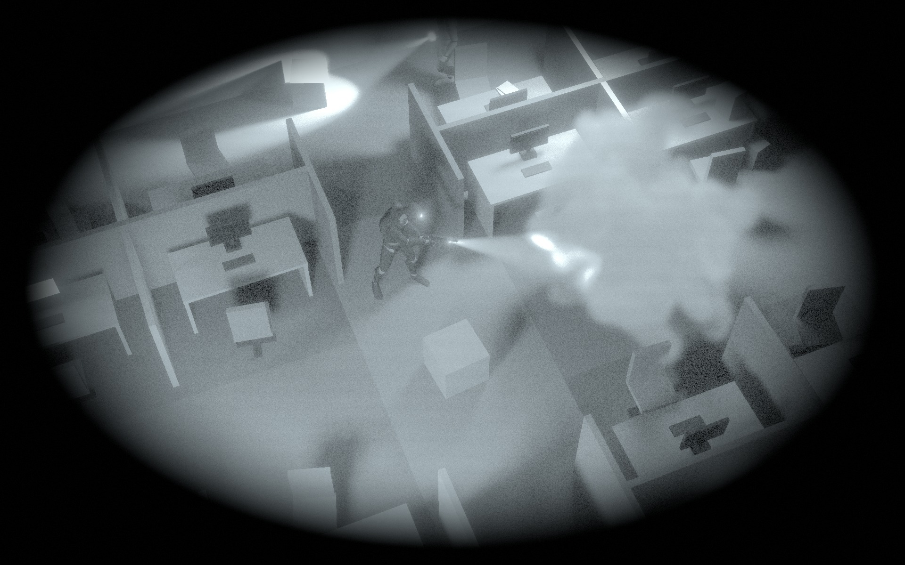<span class="tag">0 · final · night-vision post path</span></div>
    <figcaption><span class="fn">Fig. 12</span>The same HDR frame through the white-phosphor path. Everything the AgX picture crushed to near-black is readable; everything that was merely bright is now clipped.</figcaption>
  </figure>
</section>

<!-- ============================================================ 8 -->
<section class="sec" id="cost">
  <div>
    <span class="eyebrow">8 <b>· GPU pass timestamps · M4 Max · 1777×1000 internal · “high”</b></span>
    <h2>What it costs, and what “lossless” has to mean</h2>
  </div>
  <div class="tablewrap">
    <table class="timing">
      <thead><tr><th>Pass</th><th>Resolution / size</th><th class="ms">≈ ms</th></tr></thead>
      <tbody>
        <tr><td>Smoke step<small>advect · forces · RB-SOR pressure ×4 pairs · project · scalars · occupancy</small></td><td class="res">64³ per live domain</td><td class="ms">0.4 / domain</td></tr>
        <tr><td>Radiance cascades c3 → c0 + dice bake<small>every level re-traced every frame</small></td><td class="res">≈ 297 k intervals · 40×28×28 volume</td><td class="ms">≈ 2</td></tr>
        <tr><td>Direct light<small>tile cull · score · leader + tail shadow rays, both classes</small></td><td class="res">full, 8×8 tiles</td><td class="ms">≈ 8</td></tr>
        <tr><td>Penumbra denoise<small>tile mask · temporal · 4 à-trous steps, ratio space</small></td><td class="res">full</td><td class="ms">≈ 3</td></tr>
        <tr><td>Final gather<small>4 rays / texel · on-screen direct reuse · dice at the hit</small></td><td class="res">1/3 (“high”) · 1/2 (“ultra”)</td><td class="ms">≈ 3</td></tr>
        <tr><td>Volumetrics<small>equi-angular beams · smoke march</small></td><td class="res">1/2</td><td class="ms">&lt; 1</td></tr>
        <tr><td>Everything else<small>G-buffer · gather temporal + à-trous · composite · bloom · post · FXAA · meter queries</small></td><td class="res">full · 1/3 · pyramid</td><td class="ms">≈ 1 together</td></tr>
        <tr class="total"><td>Frame</td><td class="res"></td><td class="ms">≈ 18</td></tr>
      </tbody>
    </table>
  </div>
  <div class="prose">
    <p>The frame is full of shortcuts, and the project sorts them strictly into two kinds. <em>Lossless</em> ones — the per-tile light lists, the penumbra filter's tile pass-through, empty-brick skipping in every smoke sampler, empty-run skipping and per-cell height culling in the grid traversal (the height cull alone is worth about 15&nbsp;% of the frame), the unrotated-box slab fast path, rejecting the huge floor slabs by the ray segment's bounds (about 7&nbsp;%) — each ship with a written argument for why the output cannot change, and are then checked with a pixel A/B harness: a <code>?paused</code> deterministic boot, identical fixed stepping, lossless readbacks of both variants, and a diff against a same-variant noise floor captured the same way. They are on for everyone and keep a toggle only so the proof can be re-run. <em>Lossy</em> ones — shadow rays on a checkerboard half of the pixels, the gather at a third instead of half resolution, a single emitter sample for pixels that will end up near black anyway, volumetrics at quarter resolution, the cascade cache at half rate, a half-resolution pressure solve — are separate switches whose “off” is the untouched path. “Ultra” is that reference; “high” folds in the first three, judged invisible side by side at rest; the numbers above are “high”.</p>
  </div>
</section>

<!-- ============================================================ 9 -->
<section class="sec" id="ai">
  <div>
    <span class="eyebrow">9 <b>· probe.wgsl · guards.ts · the project's thesis</b></span>
    <h2>Same photons for the AI</h2>
  </div>
  <div class="prose">
    <p>The stealth systems are clients of this renderer, not a parallel model of it. The light meter on the HUD is two GPU queries a frame, at the player's chest and head: for each of six axis directions, sum every light's shadowed irradiance — the same <code>evalLight</code>, the same any-hit ray through boxes and capsules (skipping the player's own), the same smoke transmittance — add the dice irradiance for the bounce, and keep the brightest axis. The answer comes back a frame or two later by async readback and is mapped through a log curve to the 0–1 the meter shows (0.03&nbsp;W/m² reads as dark, about 4.5&nbsp;W/m² as fully lit); and that same number, raised to the power 1.5, is the rate at which a guard who has you in his cone becomes aware of you. Stand in the torch pool and the meter and the guard agree that you are lit, because they asked the same function; shoot out the panel above you and both go dark on the next frame, because nothing was baked; roll a canister between you and his sight-line query marches the very density you are watching billow. Deliberately, the meter ignores the on-screen indirect-scale look knob — the guards get physical bounce, not graded bounce. Hearing closes the loop the same way: footsteps, door clicks and shots reach the guards through the sound-propagation paths in <code>collision.ts</code> that the audio mixer uses to decide what <em>you</em> hear. One model, rendered twice — once to the screen, once into the guards.</p>
  </div>
</section>

<footer class="foot">
  <span>All twelve pictures are one deterministic frame (paused boot, fixed stepping) captured through <code>engine.settings.debugView</code>; nothing was retouched. Timings are HUD reference numbers for this scene, not a benchmark.</span>
  <span>Source of truth: <code>engine.ts</code> · <code>render/passes.ts</code> · <code>gbuffer.ts/.wgsl</code> · <code>common.wgsl</code> · <code>direct.wgsl</code> · <code>softtile/dtemporal/softblur.wgsl</code> · <code>rc.ts</code> · <code>rc.wgsl</code> · <code>fgather/temporal/giblur.wgsl</code> · <code>volumetrics.wgsl</code> · <code>smoke.ts/.wgsl</code> · <code>composite/bloom/post/fxaa.wgsl</code> · <code>lights.ts</code> · <code>probe.ts/.wgsl</code> · <code>guards.ts</code>.</span>
</footer>

</main>

<script>
(function () {
  var stages = document.querySelectorAll('[data-compare]');
  Array.prototype.forEach.call(stages, function (stage) {
    var range = stage.querySelector('input[type="range"]');
    if (!range) return;
    var left = stage.querySelector('.cmp-tag.l'), right = stage.querySelector('.cmp-tag.r');
    function set(v) {
      v = Math.max(0, Math.min(100, Math.round(v)));
      if (String(v) !== range.value) range.value = v;
      stage.style.setProperty('--pos', v + '%');
      range.setAttribute('aria-valuetext', v + '% — left: ' + (left ? left.textContent : 'before') + ', right: ' + (right ? right.textContent : 'after'));
    }
    function fromPointer(e) { var r = stage.getBoundingClientRect(); if (r.width > 0) set((e.clientX - r.left) / r.width * 100); }
    range.addEventListener('input', function () { set(+range.value); });
    stage.addEventListener('pointerdown', function (e) {
      if (e.pointerType === 'mouse' && e.button !== 0) return;
      try { stage.setPointerCapture(e.pointerId); } catch (err) {}
      fromPointer(e);
      try { range.focus({ preventScroll: true }); } catch (err) { range.focus(); }
    });
    stage.addEventListener('pointermove', function (e) { if (stage.hasPointerCapture && stage.hasPointerCapture(e.pointerId)) fromPointer(e); });
    set(+range.value);
  });
})();
</script>
